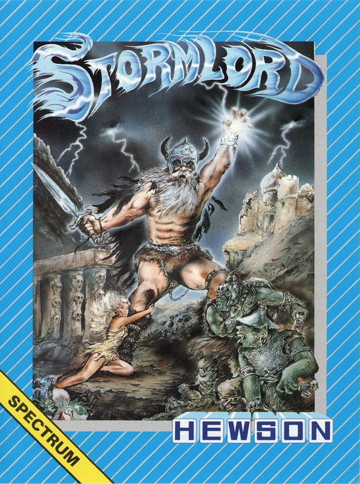
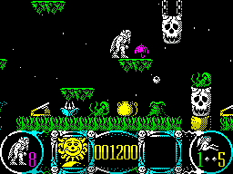

Stormlord


{kind=link}

| Publisher: | Hewson Consultants |
| Price: | £8.99 / £12.99 |
| Year: | 1989 |
| Source: | CRASH, Issue 64 |

Who said fairies don’t exist? Don’t believe a word of it! Well, actually, they won’t exist for much longer, not if the evil, wicked and generally not particularly cuddly Queen has her way. In a fit of quite understandable outrage at the unbearably loveable fairies, she’s decided that the only sensible course of action is to kidnap the lot of them. Quite right too.
But having performed this act of utterly justifiable nastiness, the entire land falls into a horrid darkness, the crops fail, the frogs get plague, Skippy fails his ‘A’ levels, etc, etc. Anyway, the upshot of all this is that you’re supposed to free all these disgustingly naff little fairy-warys so as they can go round making the land a happy place to live again. If you fail, darkness will reign for ever, and evil will penetrate the very heart of the land blah blah blah.

On each level, there are five fairies and by jumping on top of them, Stormlord frees them from the spell of the Queen (sounds a bit dubious, but if that’s how Mr Cecco’s mind works, then that’s fine by me). Dotted around the landscape are lots and lots of interesting thingies which help you progress; things like springboards which fling you millions of miles (sort of) across the sky, and pots of honey which attract bees (and Pooh Bears, but I haven’t found any of them in Stormlord).
Getting in the way, though, are Venus fly traps (usually stuck underneath a disappearing platform to catch you unawares), little plants which spit death at you, acid rain which kills, and Marks, who spoil the fun by telling you everything you have to do next (however, you might not have this problem at home; we suspect it might be limited to the CRASH office).
If you complete a level then you go on to a bonus section where the freed fairies waft about over your head. If you blow kisses at them they’ll cry and if you collect ten tears then you get an extra life (ahhh).
Stormlord is a cross between an arcade/adventure and a platform game, with shoot-’em-up bits as well — such as when you have to lob swords at a flock (?!) of attacking dragons. Without doubt it’s a tough game, so even if you do figure out all the adventure bits, the arcade side of things will still tie you in knots. But the presentation is so good it’s unlikely you’ll be able to leave the game alone. The graphics are of the highest quality, well animated and beautifully coloured. And what’s more they scroll perfectly smoothly making you wonder why anyone ever wrote a flickscreen arcade/adventure. Sound is excellent, with a good title tune and some wonderful in-game effects. Stormlord is immensely playable, highly addictive and a great CRASH Smash.
MIKE — 90%
Raf Cecco has gone and done it again folks! Not content with writing two fabberoony CRASH Smashes, namely Exolon and Cybernoid, he now makes it a hat trick with Stormlord. The game has all the polished graphics and sound that we have come to expect from Mr Cecco. And a simple but enjoyable concept makes it addictive and immensely playable. All the animation is smooth and there’s a lot of it to make each level incredibly varied. The sound complements the game well with excellent tunes and sound effects, some of which are quite funny. This is a totally brilliant game, there is so much in it and it is set at just the right difficulty level to give you hours and hours of enjoyment. Get down to that software shop and get it NOW!
NICK — 91%
The game of the Log finally arrives and it’s totally brilliant. The attention to detail is quite exceptional, from the winking fairy on the title screen (no boob jokes please, Phil) to the superb in-game sound effects. The scrolling of the marvellous graphics really is great, and this has to be the prettiest game we’ve seen in ages. My only complaint is that the game is so hard. The dragons in particular seem unbeatable, although with practice you can get past them without losing a life. This is the sort of game we used to expect from Ultimate, and makes as good use of the Spectrum as can be imagined. Don’t miss it!
MARK — 93%
RATING
Raf Cecco does it again, the best looking game for ages and extremely playable too
| Presentation: | 89% |
| Graphics: | 93% |
| Sound: | 92% |
| Playability: | 91% |
| Addictive qualities: | 91% |
| Overall: | 91% |